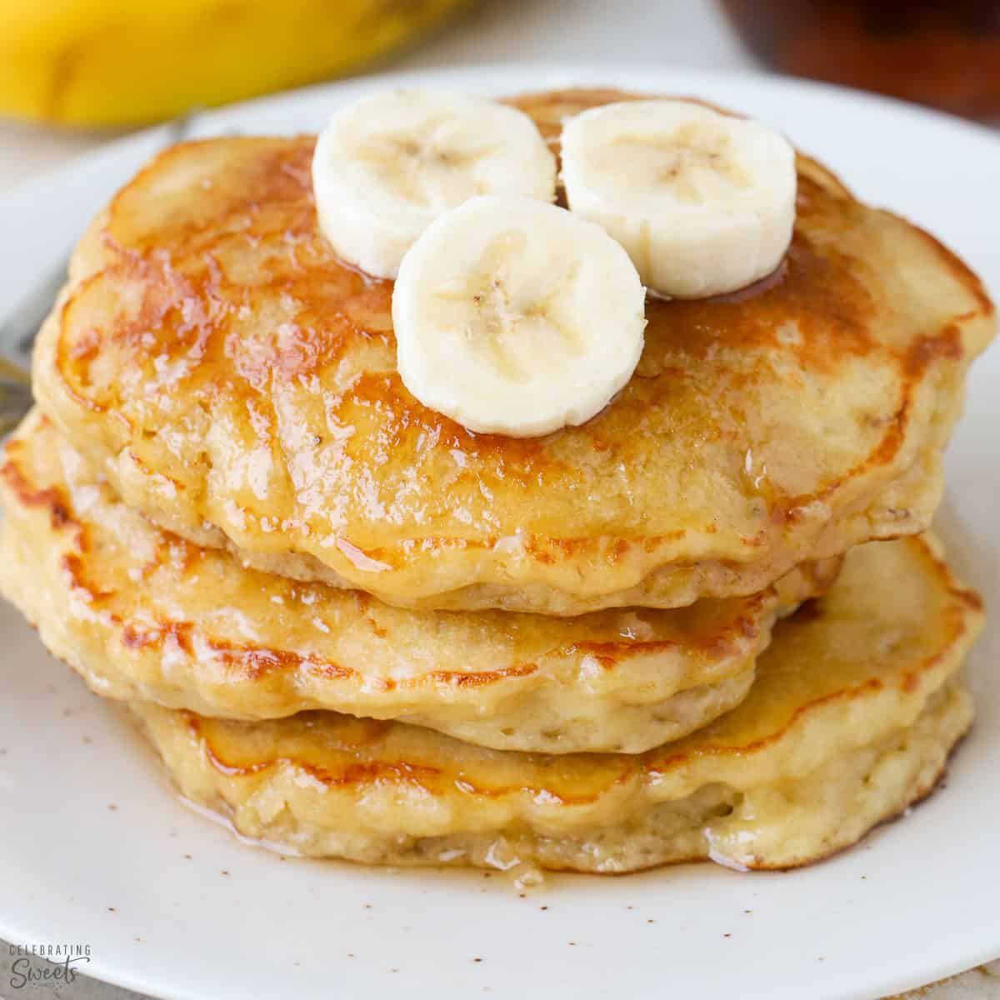

Banana Pancakes

If you’ve ever wanted to combine the deliciousness of pancakes, bananas foster, and
GAINS, look no further than this extraordinary recipe for banana protein pancakes.
Makes 5 servings | Prep Time: 10 min. | Cook Time: 10 min.
Ingredients
- 2 cup egg whites
- 3/4 cup (65g) rolled oats
- 1/2 cup cottage cheese 0% fat
- 330g overripe banana
- 1/2 tbsp cinnamon
- 5 sweetener packets
- 2 tsp guar/xanthan gum (*use certified gluten-free guar gum if you
are following a gluten-free diet)
- 0.5 cup low calorie syrup
- 1 tsp baking powder
- low-calorie syrup
Directions
- Blend all ingredients for 30 seconds or until a uniform consistency is achieved.
- (OPTIONAL) Transfer blended mixture to an airtight container, and let sit in refrigerator
for 4 hours. (Note: these can be eaten right away, but it is preferable to let the batter
thicken over a few hours).
- Heat a griddle over low-medium heat. Spray griddle with cooking spray.
Add mixture to griddle and let sit for 1-2 minutes until edges appear cooked through.
- Remove pancake from the griddle and serve on a plate with toppings of choice.